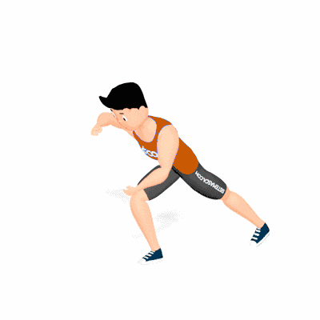

Passada Diagonal

Exercício para fortalecimento de quadríceps, glúteos, posteriores e adutores da coxa. A passada em diagonal exige maior equilíbrio e estabilidade do core. Indicado para praticantes de musculação em todos os níveis.
Ficha Técnica
Tipo: Funcional
Grupo Muscular: Perna
Aparelho: Nenhum
Músculos: Nenhum
Como realizar
- Fique em pé com pés afastados na largura dos ombros e braços ao lado do corpo;
- Dê um passo à frente em diagonal com uma das pernas, flexionando os joelhos até formar ângulo de 90°;
- Mantenha o tronco ereto e abdome contraído durante o movimento;
- Empurre o pé da frente contra o solo e retorne à posição inicial;
- Repita o movimento alternando as pernas.
 RC STORE
RC STORE